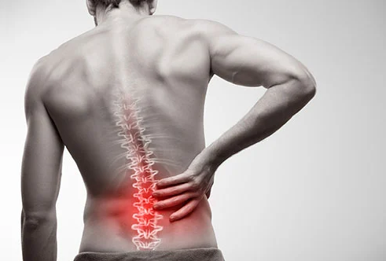

What is Sports Massage Therapy?
Sports Massage is the physical manipulation and mobilisation of muscles and soft tissues. By moving, pressing and stretching the muscles, tension and pain will be removed and knots and hard areas softened and released. Using specific and focused techniques it reaches the deep layers of the muscles enabling a profound and lasting relaxation and repair of the muscles. Sports massage helps to restore and maintain healthy, flexible and resilient muscles and nerves, improves circulation and oxygenation and supports the mental balance. With regular use of massage the body will become more resilient to stress and strains, less vulnerable to injuries and improve performance.
When used to treat injuries in order to support and improve recovery it is referred to as Remedial massage.
In order to be most efficient the individual treatment routine will be adapted to the client's disposition and needs. Therefore a precise consultation is a vital part of every appointment especially the initial one. The client's goals and expectations will be discussed and the treatment routine adjusted accordingly.
Also a careful monitoring of their progress and advice regarding supporting exercises and nutrition plays an important role in order to deliver a sustainable service to our regular clients and improve their lives permanently.
Sports and Remedial massage is a 100% natural way of healing, without the need for drugs, chemicals or technical appliances, thus being completely free of side effects, sustainable and ecological.
Who will benefit from Sports Massage?
Despite what the name might suggest everyone can benefit from Sports Massage. It is not only highly efficient for Athletes and people who are physically active, but also for individuals with a physically challenging occupation, those carrying out repetitive movements or people who are inactive, sitting at a desk all day. Painful tension, shortened muscles and ligaments, stiffness, decreased range of movement, lack of flexibility and poor circulation are often a result of these routines, which can build up over time and lead to serious long term issues like postural issues, chronic pain or damage of the muscle if left untreated. Sports and Remedial massage helps to alleviate or eliminate the negative impact of these conditions and prevent long term damage.
Sports massage is a 100% natural way of healing without the need for drugs, chemicals or technical devices. Therefore it is completely free of side effects, sustainable and ecological.

Get relief from
- Back pain
- Neck and shoulder pain
- Headaches
- Repetitive Strain Injury
- Muscle soreness
- Chronic pain
- Postural issues
- Stress relief
- Strained ligaments
- Post-exercise tightness
- Injuries
- Discomfort and tightness, e.g. from deskwork
- Stiffness
- Decreased range of movement
- Lack of flexibility
- Sprained ankle
- Shortened muscles and ligaments